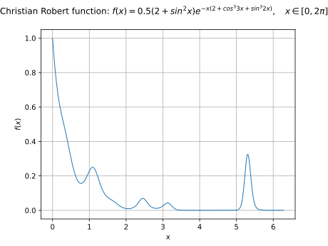
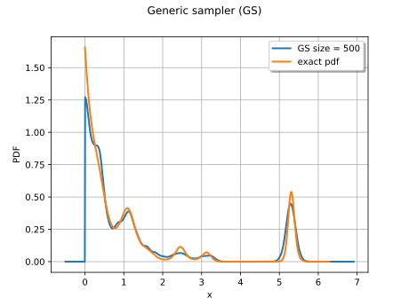
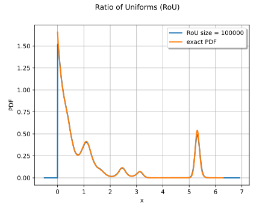
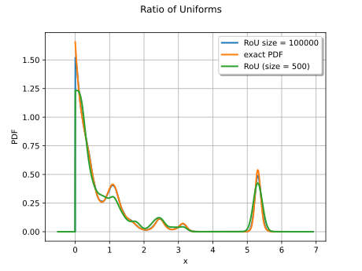
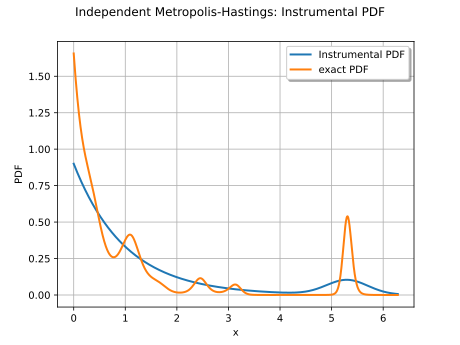
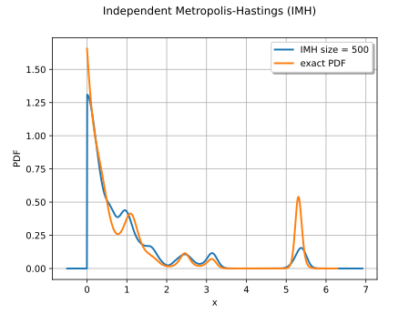
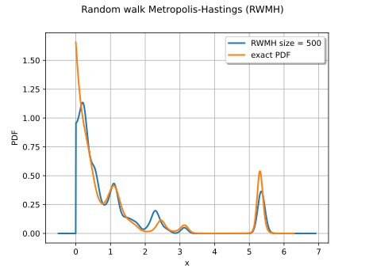
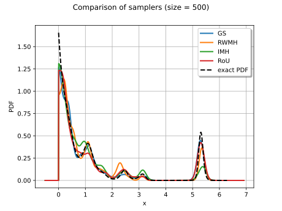

Note
Go to the end to download the full example code.
Sampling from an unscaled probability density¶
In this example, we show different ways to sample a distribution which PDF is known up to a normalization constant:
Case 1: computing the normalization factor and using a
PythonDistribution,Case 2: using the Ratio of Uniforms algorithm with the class
RatioOfUniformsCase 3: using some Metropolis-Hastings algorithms with the class
IndependentMetropolisHastingsandRandomWalkMetropolisHastings.
Consider a distribution whose
probability density function ![p]() is known up to the normalization factor
is known up to the normalization factor ![c]() :
let
:
let ![f]() be a function such that
be a function such that
![p = cf]() with
with ![c \in \Rset^+_*]() .
.
We illustrate the case with:
![f(x) = \frac{1}{2} (2 + \sin(x)^2) \exp \left[- \left(2 + \cos(3x)^3 + \sin(2x)^3 \right) x
\right] \mathbf{1}_{[0, 2 \pi]}(x).]()
First, we draw the unscaled probability density function.
import openturns as ot
import openturns.viewer as otv
from math import pi
from time import monotonic
ot.RandomGenerator.SetSeed(1)
f = ot.SymbolicFunction(
"x", "0.5 * (2 + sin(x)^2) * exp( -( 2 + cos(3*x)^3 + sin(2*x)^3) * x )"
)
lower_bound = 0.0
upper_bound = 2.0 * pi
range_PDF = ot.Interval(lower_bound, upper_bound)
graph = f.draw(lower_bound, upper_bound, 512)
graph.setTitle(
r"Christian Robert function: $f(x) = 0.5(2 + sin^2 x) e^{ -x( 2 + cos^33x + sin^3 2x)}, \quad x \in [0, 2\pi]$"
)
graph.setXTitle("x")
graph.setYTitle(r"$f(x)$")
view = otv.View(graph)

Case 1: Computation of the normalization factor¶
The best thing to do is to compute the normalization factor thanks to the integration algorithms of the library.
We show how to compute the normalization factor using a GaussKronrod quadrature formula.
denom_fact = ot.GaussKronrod().integrate(f, range_PDF)[0]
norm_fact = 1.0 / denom_fact
print("normalization factor = ", norm_fact)
normalization factor = 1.65618702904904
Thus, we can define the exact PDF expression:
![p(x) = \dfrac{f(x)}{\int_0^{2\pi} f(u)\, du}]()
exact_PDF = ot.LinearCombinationFunction([f], [norm_fact])
Then we define a PythonDistribution which:
computePDF is computed from the exact expression,
computeCDF is computed using an integration algorithm on the computePDF.
Doing that way, we use the generic sampler of the distribution, based on the CDF inversion method, implemented in the getSample method.
class NewDistribution(ot.PythonDistribution):
def __init__(self):
super().__init__(1)
self.PDF_ = exact_PDF
self.logPDF_ = ot.ComposedFunction(
ot.SymbolicFunction("x", "log(x)"), self.PDF_
)
self.rangeLow_ = 0.0
self.rangeUp_ = 2.0 * pi
def getRange(self):
return ot.Interval(self.rangeLow_, self.rangeUp_)
def computeLogPDF(self, X):
if X[0] < self.rangeLow_ or X[0] >= self.rangeUp_:
return -ot.SpecFunc.Infinity
return self.logPDF_(X)[0]
def computePDF(self, X):
if X[0] < self.rangeLow_ or X[0] >= self.rangeUp_:
return 0.0
return self.PDF_(X)[0]
def computeCDF(self, X):
if X[0] < self.rangeLow_:
return 0.0
if X[0] >= self.rangeUp_:
return 1.0
return ot.GaussLegendre([64]).integrate(
self.PDF_, ot.Interval(self.rangeLow_, X[0])
)[0]
We create the new distribution that uses the generic sampler:
We can draw the exact PDF and the PDF estimated from a sample generated by the Ratio of Uniforms algorithm.
size = 500
sample = newDist_generic.getSample(size)
ks_algo = ot.KernelSmoothing()
ks_algo.setBoundingOption(ot.KernelSmoothing.BOTH)
ks_algo.setLowerBound(lower_bound)
ks_algo.setUpperBound(upper_bound)
ks_pdf_GS = ks_algo.build(sample)
g = ks_pdf_GS.drawPDF(-0.5, upper_bound * 1.1, 1001)
draw_exact = exact_PDF.draw(lower_bound, upper_bound, 1001).getDrawable(0)
draw_exact.setLineWidth(2)
g.add(draw_exact)
g.setLegends(["GS size = " + str(size), "exact pdf"])
g.setLegendPosition("upper right")
g.setTitle("Generic sampler (GS)")
g.setXTitle("x")
view = otv.View(g)

We can change the sampler of that new distribution by implementing the method getSample and getRealization as follows:
class NewDistribution_RoU(ot.PythonDistribution):
def __init__(self):
super().__init__(1)
self.PDF_ = exact_PDF
self.logPDF_ = ot.ComposedFunction(
ot.SymbolicFunction("x", "log(x)"), self.PDF_
)
self.rangeLow_ = 0.0
self.rangeUp_ = 2.0 * pi
self.sampler_ = ot.RatioOfUniforms(self.logPDF_, self.getRange())
def getRange(self):
return ot.Interval(self.rangeLow_, self.rangeUp_)
def computeLogPDF(self, X):
if X[0] < self.rangeLow_ or X[0] >= self.rangeUp_:
return -ot.SpecFunc.Infinity
return self.logPDF_(X)[0]
def computePDF(self, X):
if X[0] < self.rangeLow_ or X[0] >= self.rangeUp_:
return 0.0
return self.PDF_(X)[0]
def computeCDF(self, X):
if X[0] < self.rangeLow_:
return 0.0
if X[0] >= self.rangeUp_:
return 1.0
return ot.GaussLegendre([32]).integrate(
self.PDF_, ot.Interval(self.rangeLow_, X[0])
)[0]
def getRealization(self):
return self.sampler_.getRealization()
def getSample(self, n):
return self.sampler_.getSample(n)
We create the new distribution that uses the Ratio of Uniforms sampler:
We compare the sampling speed of the distribution with the Ratio of Uniforms algorithm to the generic sampling speed. The Ratio of Uniforms algorithm proves to be much quicker than the generic method.
sizeRoU = 10000
sizeGeneric = 100
t0 = monotonic()
sample_RoU = newDist_RoU.getSample(sizeRoU)
t1 = monotonic()
sample_generic = newDist_generic.getSample(sizeGeneric)
t2 = monotonic()
speedRoU = sizeRoU / (t1 - t0)
speedGeneric = sizeGeneric / (t2 - t1)
print(f"Is Ratio of Uniforms faster ? {speedRoU > 10 * speedGeneric}")
Is Ratio of Uniforms faster ? True
Case 2: Direct use the Ratio of Uniforms algorithm¶
In that case, we want to use the RatioOfUniforms algorithm to
sample . We need to compute the function ![\log f]() and its range.
and its range.
We create the function and the RatioOfUniforms:
log_UnscaledPDF = ot.ComposedFunction(ot.SymbolicFunction("x", "log(x)"), f)
ratio_algo = ot.RatioOfUniforms(log_UnscaledPDF, range_PDF)
We can draw the exact PDF and the PDF estimated from a sample generated by the Ratio of Uniforms algorithm.
size = 100000
sample = ratio_algo.getSample(size)
ks_algo = ot.KernelSmoothing()
ks_algo.setBoundingOption(ot.KernelSmoothing.BOTH)
ks_algo.setLowerBound(lower_bound)
ks_algo.setUpperBound(upper_bound)
ks_pdf = ks_algo.build(sample)
g = ks_pdf.drawPDF(-0.5, upper_bound * 1.1, 1001)
g.add(draw_exact)
g.setLegends(["RoU size = " + str(size), "exact PDF"])
g.setLegendPosition("upper right")
g.setTitle("Ratio of Uniforms (RoU) ")
g.setXTitle("x")
view = otv.View(g)

In order to facilitate the comparison with the use of Metropolis-Hastings based algorithms, we generate a sample of the same size and we draw the estimated PDF.
size2 = 500
sample = ratio_algo.getSample(size2)
ks_algo = ot.KernelSmoothing()
ks_algo.setBoundingOption(ot.KernelSmoothing.BOTH)
ks_algo.setLowerBound(lower_bound)
ks_algo.setUpperBound(upper_bound)
ks_pdf_RoU = ks_algo.build(sample)
draw_RoU = ks_pdf_RoU.drawPDF(-0.5, upper_bound * 1.1, 1001).getDrawable(0)
draw_RoU.setLineWidth(2)
g.add(draw_RoU)
g.setLegends(
["RoU size = " + str(size), "exact PDF", "RoU (size = " + str(size2) + ")"]
)
g.setTitle("Ratio of Uniforms")
view = otv.View(g)

By default, the parameter ![r=1]() . We can get the associated acceptance ratio:
. We can get the associated acceptance ratio:
print("Acceptance ratio = ", ratio_algo.getAcceptanceRatio())
Acceptance ratio = 0.10015724687759783
We can estimate the normalization factor with the Ratio of Uniforms algorithm (see
the documenttaion of RatioOfUniforms):
print("Normalization factor estimate = ", ratio_algo.getC())
Normalization factor estimate = 1.6477858299397723
We can change the ![r]() parameter and check the associated acceptance ratio:
parameter and check the associated acceptance ratio:
r_new = 0.5
ratio_algo.setR(r_new)
print("New acceptance ratio = ", ratio_algo.getAcceptanceRatio())
New acceptance ratio = 0.11111358030178449
Case 3(a): Use of Independent Metropolis-Hastings¶
Let us use a mixture distribution to approximate the target distribution.
This approximation will serve as the instrumental distribution in the independent Metropolis-Hastings algorithm.
exp = ot.Exponential(1.0)
unif = ot.Normal(5.3, 0.4)
instrumental_dist = ot.Mixture([exp, unif], [0.9, 0.1])
Compare the instrumental density to the exact PDF.
graph = instrumental_dist.drawPDF(lower_bound, upper_bound, 512)
graph.add(draw_exact)
graph.setLegends(["Instrumental PDF", "exact PDF"])
graph.setLegendPosition("upper right")
graph.setTitle("Independent Metropolis-Hastings: Instrumental PDF")
graph.setXTitle("x")
_ = otv.View(graph)

MetropolisHastings and derived classes can work directly with the logarithm of the unscaled
target density.
log_density = ot.ComposedFunction(ot.SymbolicFunction("x", "log(x)"), f)
initial_State = ot.Point([3.0]) # not important in this case
independent_IMH = ot.IndependentMetropolisHastings(
log_density, range_PDF, initial_State, instrumental_dist, [0]
)
Get a sample
sample_Size = 500
sample_IMH = independent_IMH.getSample(sample_Size)
Plot the PDF of the sample to compare it to the target density
ks_algo = ot.KernelSmoothing()
ks_algo.setBoundingOption(ot.KernelSmoothing.BOTH)
ks_algo.setLowerBound(0.0)
ks_algo.setUpperBound(2.0 * pi)
posterior_IMH = ks_algo.build(sample_IMH)
g_IMH = posterior_IMH.drawPDF(-0.5, upper_bound * 1.1, 1001)
g_IMH.add(draw_exact)
g_IMH.setLegends(["IMH size = {}".format(sample_Size), "exact PDF"])
g_IMH.setTitle("Independent Metropolis-Hastings (IMH)")
g_IMH.setXTitle("x")
g_IMH.setLegendPosition("upper right")
view = otv.View(g_IMH)

Even with very few sampling points (500), independent Metropolis-Hastings (with a judiciously chosen instrumental distribution) manages to capture the main features of the target density.
Case 3(b): Use of Random walk Metropolis-Hastings¶
Let us use a normal instrumental distribution.
instrumental_dist = ot.Normal(0.0, 2.5)
randomwalk_MH = ot.RandomWalkMetropolisHastings(
log_density, range_PDF, initial_State, instrumental_dist, [0]
)
Get a sample
sample_RWMH = randomwalk_MH.getSample(sample_Size)
Plot the PDF of the sample to compare it to the target density
ks_algo = ot.KernelSmoothing()
ks_algo.setBoundingOption(ot.KernelSmoothing.BOTH)
ks_algo.setLowerBound(0.0)
ks_algo.setUpperBound(2.0 * pi)
posterior_RWMH = ks_algo.build(sample_RWMH)
g_RWMH = posterior_RWMH.drawPDF(-0.5, upper_bound * 1.1, 1001)
g_RWMH.add(draw_exact)
g_RWMH.setLegends(["RWMH size = {}".format(sample_Size), "exact PDF"])
g_RWMH.setTitle("Random walk Metropolis-Hastings (RWMH)")
g_RWMH.setXTitle("x")
g_RWMH.setLegendPosition("upper right")
view = otv.View(g_RWMH)

Final comparison¶
We plot on the same graph the estimated PDF with all the previous algorithms with the same sample size. sphinx_gallery_thumbnail_number = 8
g = ks_pdf_GS.drawPDF(-0.5, upper_bound * 1.1, 1001)
g.add(posterior_RWMH.drawPDF(-0.5, upper_bound * 1.1, 1001))
g.add(posterior_IMH.drawPDF(-0.5, upper_bound * 1.1, 1001))
g.add(ks_pdf_RoU.drawPDF(-0.5, upper_bound * 1.1, 1001))
draw_exact.setLineStyle("dashed")
draw_exact.setColor("black")
g.add(draw_exact)
g.setLegends(["GS", "RWMH", "IMH", "RoU", "exact PDF"])
g.setTitle("Comparison of samplers (size = 500)")
g.setXTitle("x")
view = otv.View(g)

view.ShowAll()
References¶
[1] Marin , J.M. & Robert, C.P. (2007). Bayesian Core: A Practical Approach to Computational Bayesian Statistics. Springer-Verlag, New York